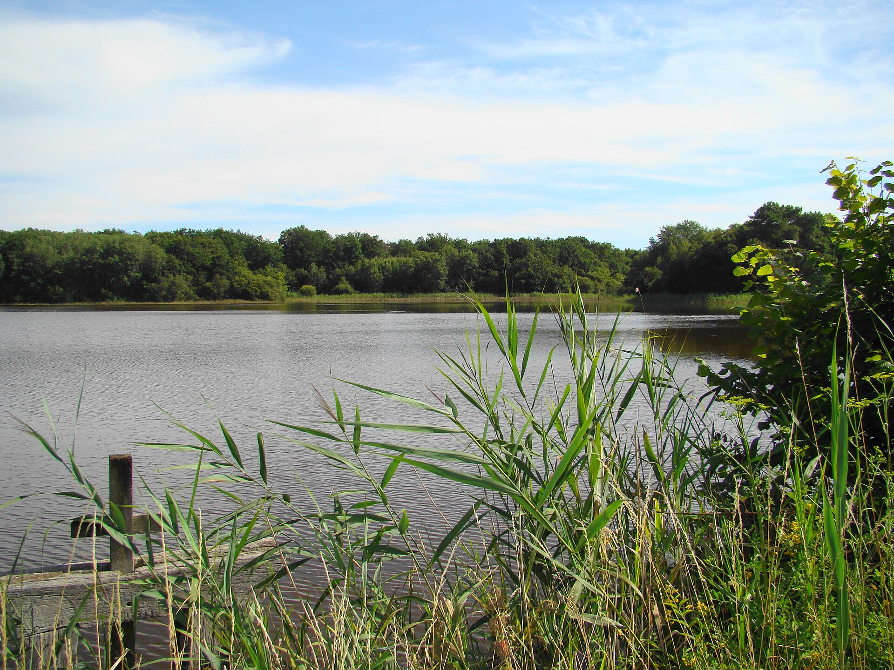
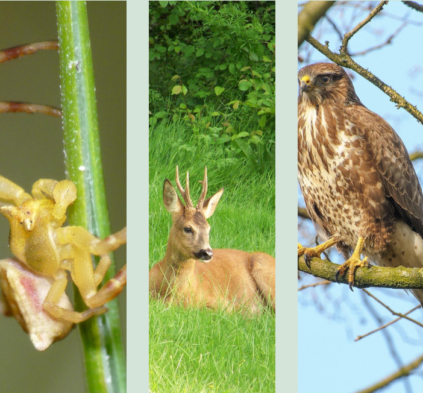

Bienvenue sur l'Atlas
Explorez la richesse écologique de notre département. Des forêts mystérieuses de la Sologne aux étangs cachés, découvrez les espèces qui partagent notre territoire.
Faune
Cerfs, oiseaux, insectes... La vie animale de la région.
Flore
Arbres séculaires, fleurs sauvages et plantes des marais.
Champignons
Inventaire des espèces mycologiques de nos forêts.
Espaces
Les plus beaux sites naturels protégés du 41.

La Sologne Sauvage
Région naturelle emblématique du Loir-et-Cher, la Sologne s’étend sur de vastes étendues boisées et mystérieuses. Elle abrite des milliers d’étangs, de grandes forêts de pins et de chênes, ainsi que des landes de bruyère. C’est un véritable refuge pour la faune, où s’épanouissent les grands cervidés, le sanglier, et une multitude d’oiseaux d’eau.

Une biodiversité riche
Il y a des milliers d’espèces sauvages observables en Sologne et dans l’ensemble du Loir-et-Cher.
Notre atlas vous propose de partir à la découverte de cette richesse unique à travers des fiches d’identification claires sur la faune, la flore et les champignons de notre territoire.